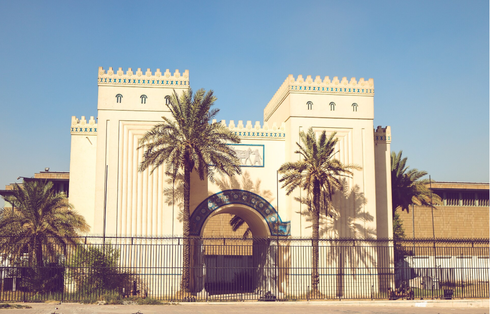
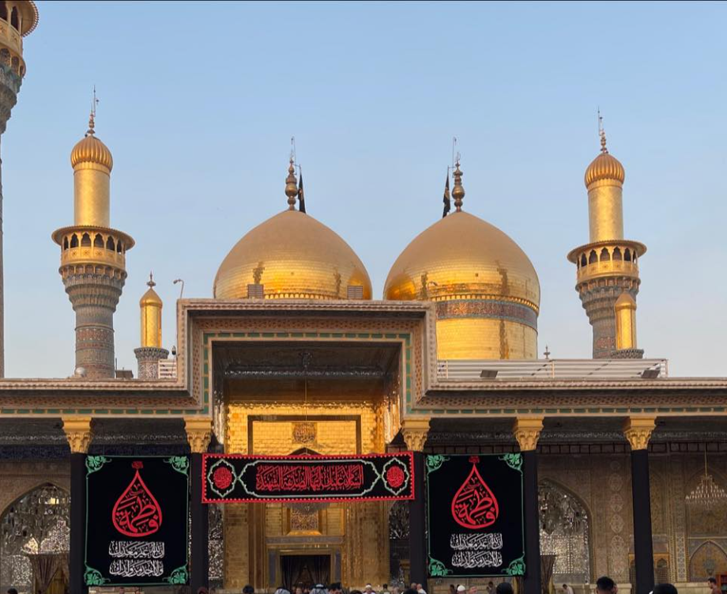
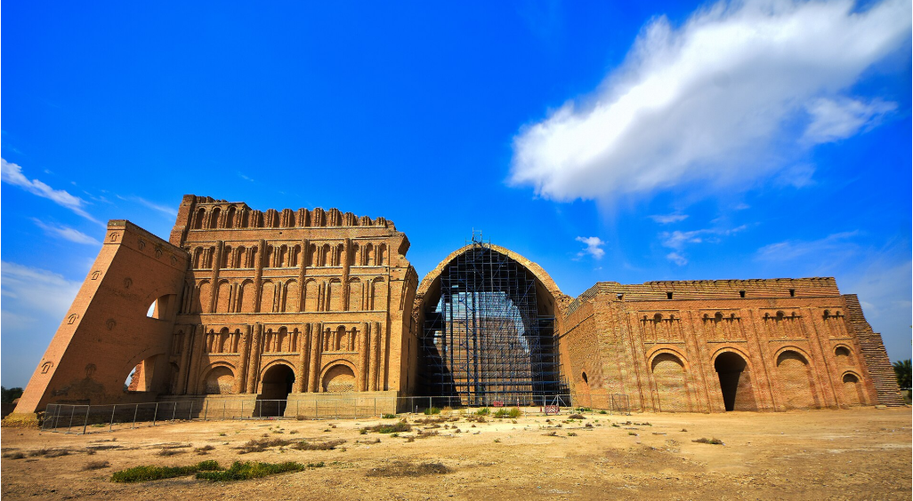
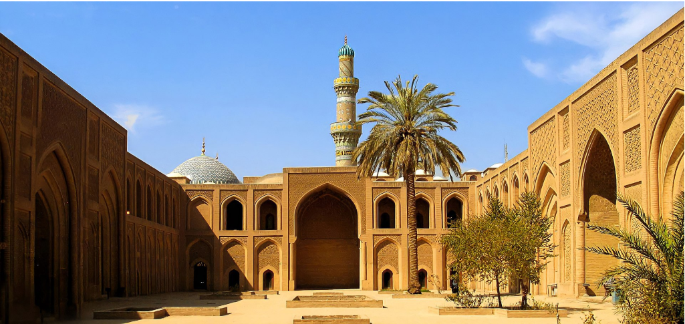
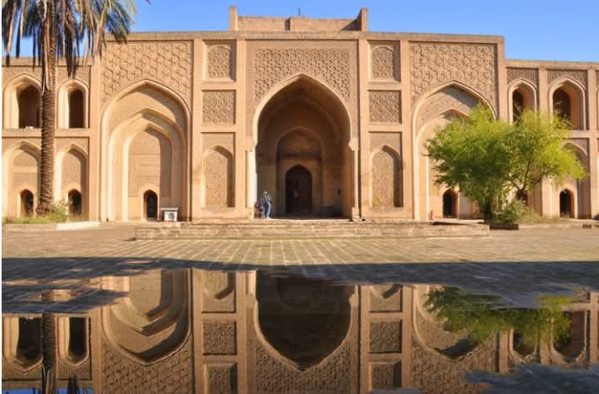
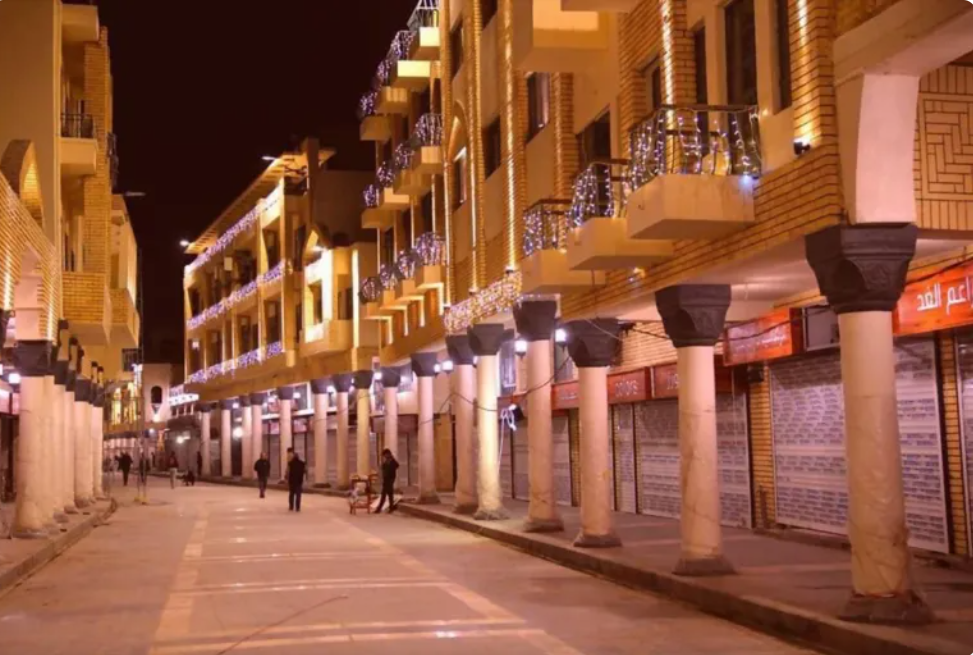
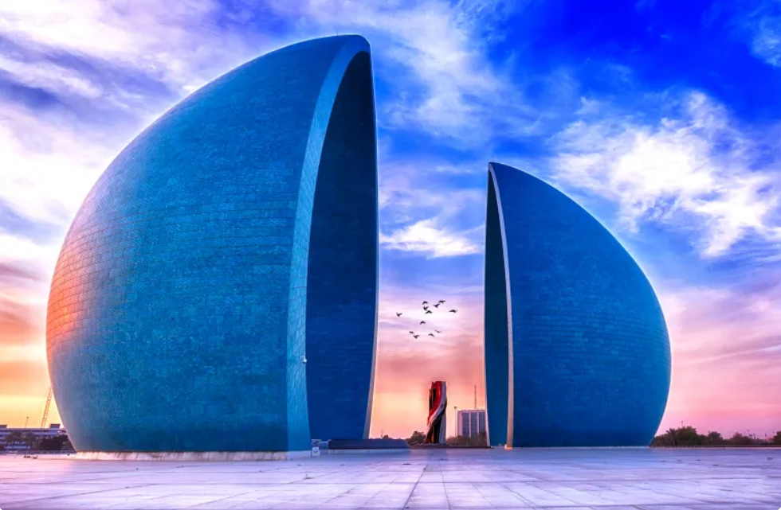
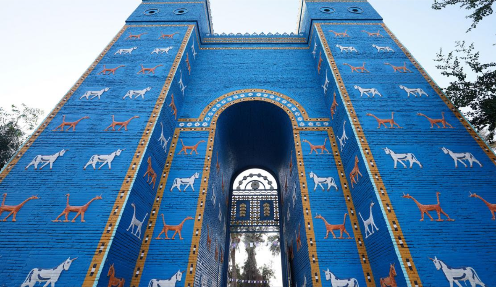

المتحف العراقي
Iraq Museum
Est. 1926
One of the world's great museums — over 170,000 artefacts spanning seven millennia of Mesopotamian civilisation, from Sumerian tablets to Assyrian ivories.
بغداد · مهد الحضارة
Where ancient Mesopotamia meets a living, breathing culture — curated exclusively for the discerning traveller.
Baghdad — Madinat al-Salam, "City of Peace" — was founded in 762 CE by the Abbasid Caliph al-Mansur on the banks of the Tigris River. Within a century it had become the largest city on earth, a beacon of art, science, and culture during the Islamic Golden Age.
Today, Safari curates the only private luxury programme that opens the doors of ancient palaces, living souqs, and sacred shrines for the world's most discerning travellers.
Explore Historical Sites →Founded by Caliph al-Mansur
UNESCO-listed heritage sites
Continuous human settlement
Exclusive private tours
The Sumer and Akkad civilisations flourish between the Tigris and Euphrates rivers, inventing writing, law, and the wheel — the very foundations of human culture.
Cyrus the Great conquers Babylon, integrating Iraq into the Achaemenid Empire and preserving its extraordinary cultural heritage for posterity.
Caliph al-Mansur establishes Madinat al-Salam ("City of Peace") on the west bank of the Tigris as the glittering capital of the Abbasid Caliphate.
Bayt al-Hikmah becomes the world's greatest centre of learning — translating Greek, Persian, and Indian texts into Arabic, preserving classical knowledge that would later spark the European Renaissance.
Hulagu Khan sacks Baghdad, destroying the Grand Library. Centuries of scholarship perish in the Tigris. Yet the city endures — and slowly, magnificently, rebuilds.
The Kingdom of Iraq is proclaimed. Baghdad re-emerges as a modern capital, blending its ancient identity with the ambitions of an independent Arab nation.
Each Safari itinerary grants private after-hours access to these monuments, accompanied by the region's foremost historians.

المتحف العراقي
Est. 1926
One of the world's great museums — over 170,000 artefacts spanning seven millennia of Mesopotamian civilisation, from Sumerian tablets to Assyrian ivories.

الكاظمية
16th Century
A masterpiece of Islamic architecture crowned by four golden minarets and two gilded domes. One of the holiest Shia shrines, drawing millions of pilgrims annually.

طاق كسرى
3rd Century CE
The largest single-span brick vault ever constructed in antiquity — the sole surviving structure of the great Sassanid capital, 35 km south of Baghdad.

المستنصرية
1227 CE
Founded by Caliph al-Mustansir, this medieval madrasa was once the most advanced university in the world, teaching law, medicine, grammar, and mathematics.

القصر العباسي
12th Century
The last standing monument of the original Round City. Its intricate muqarnas vaulting and geometric stucco screens represent the apogee of Abbasid craftsmanship.

شارع المتنبي
Medieval
The intellectual soul of Baghdad. Named after the great 10th-century poet, this riverside boulevard is lined with bookshops — a living Friday tradition.

نصب الشهيد
1983
Ismail Fattah al-Turk's iconic split turquoise dome — one of the finest examples of contemporary Arab memorial architecture, overlooking the Tigris.

بابل
1894–539 BCE
90 km south of Baghdad — home of Hammurabi, Nebuchadnezzar, and legend. The Ishtar Gate's glazed blue bricks still dazzle across four thousand years.
7 Days
The definitive journey through Baghdad's golden age. Private access, Michelin-calibre dining, and stays in the finest heritage properties.
10 Days
An immersive expedition tracing humanity's earliest civilisations — from Sumerian clay tablets to the grandeur of ancient Babylon.
5 Days
A sensory deep-dive into Baghdad's living culture — its poets, craftspeople, markets, and the eternal rhythm of the Tigris.
"Baghdad is not a city you visit — it is a city you are changed by. To walk the banks of the Tigris at dawn is to feel the entire weight of human civilisation settle gently upon your shoulders."
Sir Peter Frankopan — Historian & Author, The Silk Roads
From slow-cooked masgouf river carp on the banks of the Tigris to centuries-old samoon bread baked at dawn — Baghdad's cuisine is a sensory time machine.
Al-Mutanabbi's verse still reverberates through Baghdad's streets. Every Friday, poets and scholars gather at the book market named in his honour.
The intricate geometric patterns adorning Baghdad's mosques encode mathematical principles rediscovered by Europe five centuries later.
Copper-beating, carpet-weaving, ceramic painting — Baghdad's artisan quarters carry living techniques unchanged since the Abbasid golden age.
Iraqi maqam — recognised by UNESCO — is among the world's most sophisticated musical traditions, rooted in millennia of Mesopotamian sound.
Iraqi qahwa (cardamom coffee) and the ancient tradition of gathering — the majlis — remain the beating heart of Baghdad social life.
Safari's Baghdad programme is unlike anything else in luxury travel. The private dawn access to Ctesiphon — watching the arch turn from charcoal to amber in the first light — was a moment I will carry for the rest of my life.
Charlotte Pemberton
Travel Correspondent, Condé Nast Traveller
As a professional archaeologist I was sceptical. Safari exceeded every expectation — the depth of historical briefings, the quality of local experts, and the sheer intelligence of the itinerary design is exceptional.
Dr. Ramón Alcázar
Archaeological Fellow, Harvard University
Baghdad deserves the world's finest tourism company, and Safari delivers precisely that. They tell the story of my region's history with reverence, accuracy, and magnificent production.
Amira Al-Hassan
CEO, Gulf Heritage Foundation
October through April, when temperatures range from a pleasant 15–25°C. Avoid June–August when Baghdad can exceed 50°C.
Conservative dress is respectful and required at religious sites. Safari provides tailored local dress for all guests for authentic experiences.
Iraqi Dinar (IQD). Safari arranges pre-loaded safari cards and all payments at partner properties are handled seamlessly on your behalf.
Always request permission before photographing people. Our guides navigate local customs to ensure you capture extraordinary images respectfully.
Safari travels with dedicated security advisors and medical support. All itineraries are live-monitored 24/7 by our Baghdad operations centre.
Safari provides a private VSAT internet satellite device for each group — reliable connectivity anywhere in Iraq, including the most remote sites.
Each Safari programme is entirely bespoke. Our Baghdad specialists — available seven days a week — will design an itinerary around your interests, dates, and group.